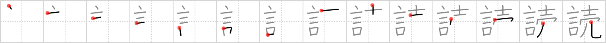

読
← →
read

Reading:
On-Yomi: ドク、トク、トウ — Kun-Yomi: よ.む、-よ.み
Heisig story:
In the age of advertising, most words we read are out to sell some product or point of view.
Koohii stories:
1) [taikura] 10-11-2008(160): People will say ( 言 ) almost anything to make a sale ( 売 ); don't believe everything you read ( 読 ).
2) [richcoop] 28-6-2009(84): Read the WORDS used to SELL things.
3) [j0k0m0] 22-2-2009(39): Extra! extra! Read all about it! words for sale here.
4) [jabberwockychortles] 3-3-2009(24): Most of the words that we read are meant to sell something.
5) [AndamanIslander] 21-1-2008(23): I'm a freelance journalists, so the words I sell are the words you read.